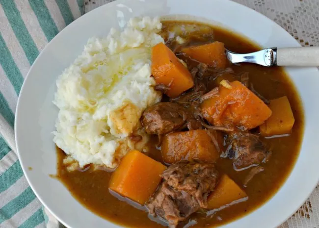

Beefstew

Description
This hearty and delicious stew is perfect for the rainy days of fall.
Ingrdients
- 2 pounds beef stew meat, cut into 1 inch cubes
- ¼ cup all-purpose flour
- ½ teaspoon salt
- ½ teaspoon ground black pepper
- 4 cloves garlic, minced
- 1 bay leaf
- 1 teaspoon paprika
- 1 teaspoon Worcestershire sauce
- 1 onion, chopped
- 1 ½ cups reduced-sodium beef broth
- 3 potatoes, diced
- 4 carrots, sliced
- 1 stalk celery, chopped
- ¾ pound butternut squash, peeled and cut into small chunks
- ½ head escarole, washed and torn into bite-sized pieces
Place beef in slow cooker. Mix together flour, salt, and pepper in a small bowl. Pour over meat and stir to coat. Stir in garlic, bay leaf, paprika, Worcestershire sauce, onion, beef broth, potatoes, carrots, celery, and butternut squash.
- Cover and cook on Low for 10 to 12 hours or on High for 4 to 6 hours. Stir in escarole. Cover and cook until escarole is tender, 15 to 20 minutes.